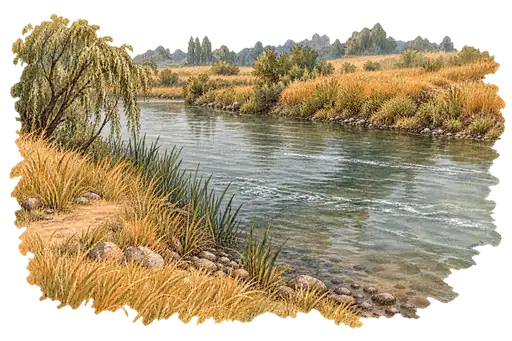
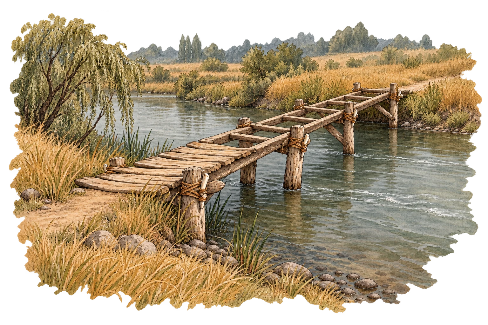
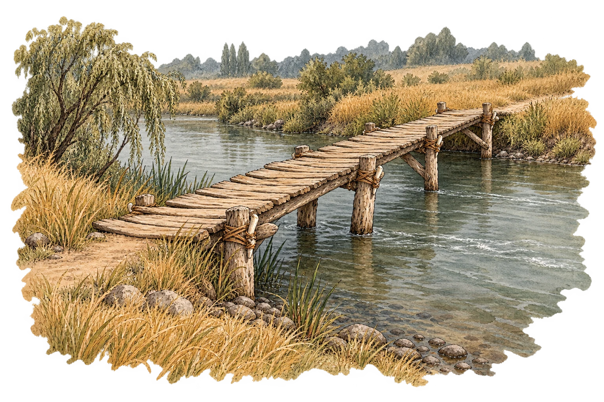
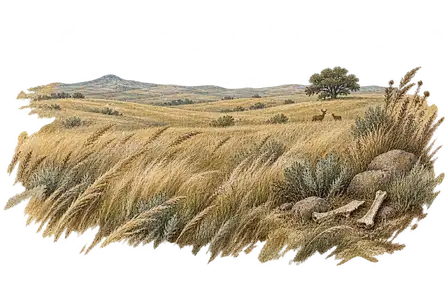
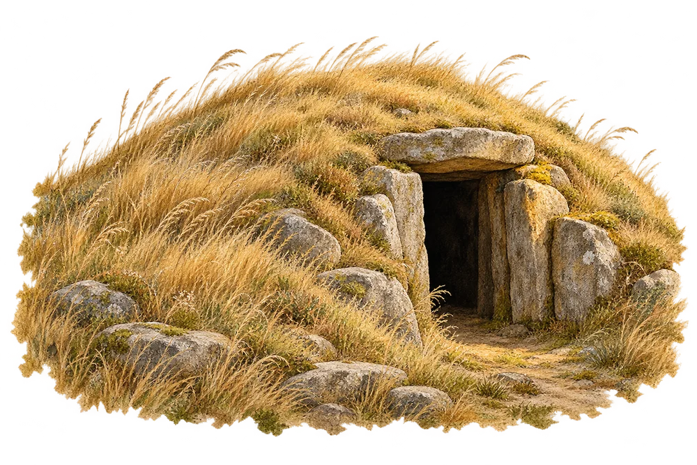
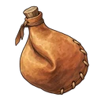

Éclat · Âge de l’Os · illustrationsLa Passerelle
Depuis la Plaine des Hautes Herbes, rejoindre la Rivière Lente. Des pieux de bois, des ligatures de peau et des chevilles d’os : un ouvrage qui prend forme sous les mains du Semeur.



Étude des illustrations · pas de coût ni de durée de jeu.
La continuité de l’âge de l’Os

I · Le Champ des Os
II · Le Tumulus
L’outre, prête pour la routeLe Champ des Os, le Tumulus et les objets étaient déjà illustrés. Ce lot complète la sortie de cette terre. La rivière garde ses saules, ses galets sombres et ses eaux grises ; aucun équipement d’un âge ultérieur n’apparaît ici.
La terre suivante
La Rivière Lente · illustration existante